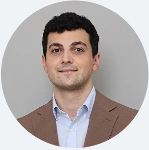
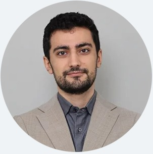

Самая комплексная программа поступления: заявка ведётся целиком, от стратегии до подачи.
Full Support — самая комплексная и персонализированная admissions-программа Freshman. Каждый год мы отбираем 12–15 амбициозных студентов, которые подают документы в конкурентные университеты США. За последние три года более 80% студентов программы поступили в топовые вузы США и мира. Мы берём либо очень талантливых, либо очень ресурсных студентов — и ведём заявку на 100%: от стратегии до связей с профессорами и профессионалами в нужной области.
Полное сопровождение подготовки и подачи заявки в конкурентные университеты США.
Full Support — не коробочный пакет: объём работы собирается под конкретного студента, поэтому и стоимость всегда индивидуальная.
Итоговая сумма зависит от объёма поддержки: количества мотивационных и дополнительных эссе, числа вузов, глубины сопровождения исследовательской работы и других задач. Точную стоимость называем после консультации, когда понятны цели и стартовая точка студента.
По запросу возможны дополнительные услуги — например расширенная поддержка по исследованию или организация поездок за рубеж. В базовую стоимость они не входят и обязательными не являются.
Записаться на консультациюПомогаем школьным учителям убедительно представить заявку студента — готовим bullet-point список опыта и рекомендации по написанию письма.
Заполнение CommonApp и CSS profile может пугать, если не с кем свериться. Даём расширенную поддержку по CommonApp; по CSS — менее плотную, из соображений приватности.
Любая профессиональная поддержка, нужная для заявки в международный университет: список вузов, подготовка к интервью и доступ к эксклюзивным alumni-мероприятиям Freshman.

Выпускник Yale-NUS (философия, политика, экономика), прошёл Grand Strategy Program в Yale University. За два года помог студентам получить стипендии на общую сумму свыше $4 000 000.
Senior Project Associate в Virginia Tech Institute for Policy and Governance. Как essay-коуч помогла студентам поступить в вузы США, Канады и Европы.
Носитель английского языка, учится в Babson College на полной стипендии (Law and Finance). Опыт запуска e-commerce проектов в Центральной Азии; отвечает за Creative Writing и Admissions Advising, логистику и распределение менторов.

Выпускник Yale-NUS, история и Arts & Humanities. Прошёл курс Harvard по комиксам и визуальному сторителлингу. Руководит Freshman Consultations Department, ведёт заявки десятков студентов.
Full Support требует значительных финансовых и временных ресурсов, что может стать барьером для части студентов. Каждый год мы отбираем несколько таких студентов и предлагаем им место в команде Freshman — ассистентом преподавателя или social media intern — в обмен на участие в программе. Формат полностью need-based, а не merit-based: на когорту доступно одно место, потребуются финансовые документы и дополнительное интервью.
Напишите нам — подберём программу и время занятий под ваш график и текущий уровень.